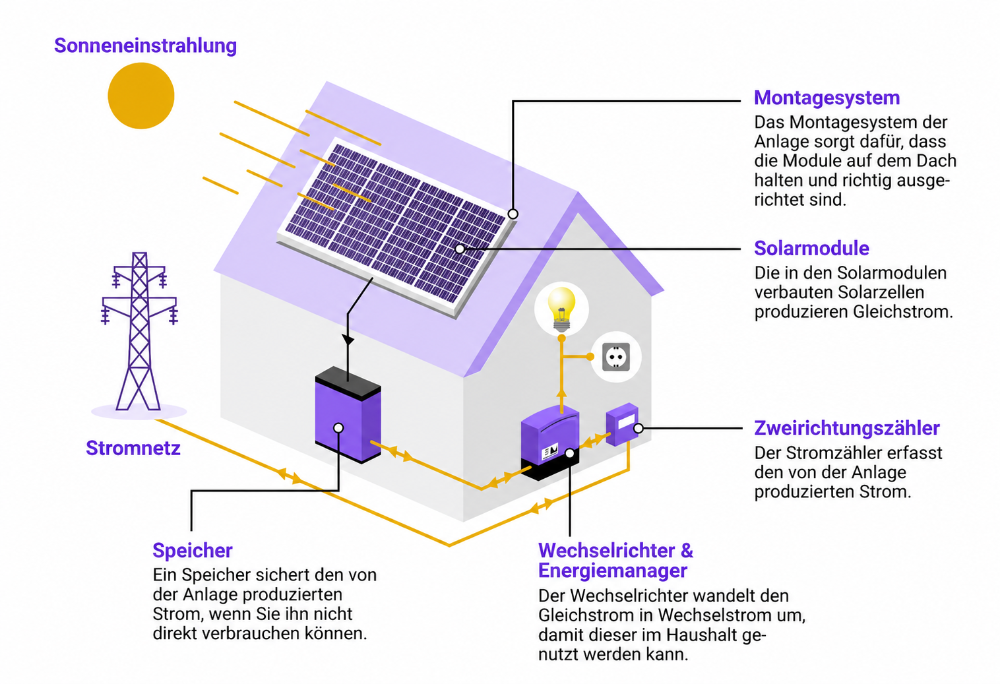

1. Die Sonne scheint
Auf Ihrem Dach liegen dunkle Platten, die Solarmodule. Fällt Licht darauf, entsteht darin Strom. Dafür braucht es keine Hitze. Auch an einem kühlen, hellen Tag läuft die Anlage.
Jetzt kostenlose Anfrage erstellen und innerhalb 48h ein Angebot erhalten!
Home / Wissen
Sie müssen kein Fachmann sein, um eine Solaranlage zu verstehen. Auf dieser Seite erklären wir in Ruhe und ohne Fachwörter, was eine Solaranlage ist, aus welchen Teilen sie besteht und wie wir sie auf Ihrem Dach aufbauen.
Eine Solaranlage macht aus Sonnenlicht Strom. Sie hat keine beweglichen Teile, sie ist leise, und sie arbeitet jeden Tag von selbst, auch wenn niemand zu Hause ist.
Auf Ihrem Dach liegen dunkle Platten, die Solarmodule. Fällt Licht darauf, entsteht darin Strom. Dafür braucht es keine Hitze. Auch an einem kühlen, hellen Tag läuft die Anlage.
Der Strom vom Dach passt noch nicht zur Steckdose. Ein Gerät im Keller, der Wechselrichter, wandelt ihn um. Danach ist es ganz normaler Haushaltsstrom.
Der Strom fliesst zuerst in Ihr Haus: Kühlschrank, Licht, Waschmaschine. Was übrig bleibt, geht in den Speicher oder ins öffentliche Netz. Dafür bekommen Sie Geld.
Kurz gesagt: Sie kaufen weniger Strom ein und bezahlen dadurch jeden Monat weniger.
Eine Anlage besteht aus wenigen Teilen. Hier sind sie, mit dem, was sie tun.

Die dunklen Platten auf dem Dach. Ein Modul ist etwa so gross wie eine Zimmertür. Auf ein Einfamilienhaus kommen meist 15 bis 30 Stück.
Das Gestell aus Metall, auf dem die Module sitzen. Es wird fest mit dem Dach verbunden und hält Sturm und Schnee stand.
Ein Kasten an der Wand, meist im Keller. Er macht aus dem Strom vom Dach den Strom für Ihre Steckdosen. Ohne ihn läuft nichts.
Er misst, wie viel Strom Sie selbst verbrauchen und wie viel Sie ans Netz abgeben. Den Austausch meldet und organisiert Ihr Elektrizitätswerk. Wir kümmern uns um die Formulare.
Eine Batterie, etwa so gross wie ein kleiner Kühlschrank. Sie hebt Strom vom Tag für den Abend auf. Ohne Speicher funktioniert die Anlage auch, mit Speicher nutzen Sie mehr davon selbst.
Sie verbinden Dach, Wechselrichter und Sicherungskasten. Wir verlegen sie so, dass man möglichst wenig davon sieht.
Von Ihrer Anfrage bis zum eigenen Strom sind es fünf Schritte. Die Arbeit auf dem Dach dauert bei einem Einfamilienhaus meist zwei bis drei Tage.
Wir messen das Dach aus und prüfen, wie viel Sonne es bekommt. Sie erfahren, wie viele Module Platz haben und was die Anlage bringt.
Innerhalb von 48 Stunden bekommen Sie einen festen Preis. Darin steht alles: Material, Gerüst, Montage und Anmeldung.
Anmeldung beim Elektrizitätswerk, Förderbeiträge, Bewilligungen. Das übernehmen wir für Sie.
Zuerst kommt das Gerüst, damit alle sicher arbeiten. Dann bauen wir Gestell, Module und Wechselrichter ein.
Wir prüfen die Anlage, schalten sie ein und zeigen Ihnen in Ruhe, wie Sie sehen, was gerade produziert wird.
Sie müssen während der Montage nicht zu Hause sein. Strom fällt höchstens für ein bis zwei Stunden aus. Den Termin sagen wir vorher an.
Jedes Dach ist anders. Deshalb ist auch die Befestigung anders. Die drei häufigsten Fälle:
Wir heben einzelne Ziegel an und setzen darunter Haken, die am Dachstuhl verschraubt werden. Danach kommen die Ziegel zurück an ihren Platz. Das Dach bleibt dicht, und die Module liegen flach darauf. Bei Eternit oder Blech verwenden wir passende Klemmen statt Haken.
Hier wird nicht gebohrt. Die Module stehen auf Wannen, die mit Steinen oder Platten beschwert werden. So bleibt die Dachhaut unberührt. Die Module werden leicht schräg gestellt, damit die Sonne besser darauf fällt und Regen den Schmutz abwäscht.
Eine Solaranlage hält 25 Jahre und länger. Wenn Ihr Dach in den nächsten Jahren ohnehin erneuert werden muss, macht man beides zusammen, sonst muss die Anlage später wieder herunter. Wir erneuern das Dach und montieren die Anlage im gleichen Zug, mit einem Gerüst und einem Team.
Zu den DachsanierungenDie Sonne scheint am Mittag, gekocht und ferngesehen wird am Abend. Ein Speicher hebt den Strom vom Tag bis zum Abend auf. Ohne Speicher nutzen Sie etwa ein Drittel Ihres Stroms selbst, mit Speicher deutlich mehr. Ob sich das für Sie lohnt, rechnen wir vorher aus. Ehrlich, auch wenn die Antwort Nein lautet.
Unverbindlich nachfragenFür Arbeiten am Dach braucht es ein Gerüst. Das kostet unabhängig davon, wie viel oben gemacht wird. Deshalb lohnt es sich, alles zusammenzulegen.
19–48%
günstiger als ein separater Auftrag später
Ein Gerüst am Einfamilienhaus kostet nach unserer Preisliste 2'799.— pauschal. Steht es für die Solaranlage schon da, kostet es für die Fenster nichts mehr.
Warten Sie mit den Fenstern ein paar Jahre, fällt das Gerüst ein zweites Mal an. Dazu kommt eine Firma, die neu anrückt und sich einarbeitet. Die Fenster selbst kosten in beiden Fällen gleich viel.
Wie gross die Ersparnis prozentual ausfällt, hängt davon ab, wie viele Fenster gewechselt werden. Je kleiner die Fensterarbeit, desto stärker fällt das Gerüst ins Gewicht.
| Fensterarbeiten | Separat, mit eigenem Gerüst | Zusammen mit der Solaranlage | Ersparnis |
|---|---|---|---|
| 3'000.— | 5'799.— | 3'000.— | 48% |
| 5'000.— | 7'799.— | 5'000.— | 36% |
| 8'000.— | 10'799.— | 8'000.— | 26% |
| 12'000.— | 14'799.— | 12'000.— | 19% |
Die Beträge in der ersten Spalte sind Beispiele für den Umfang der Fensterarbeiten. Fest ist der Gerüstpreis von 2'799.— aus unserer Gerüst-Preisliste. Er entfällt bei gleichzeitiger Ausführung. Beim Mehrfamilienhaus liegt das Gerüst bei 5'199.—, die Ersparnis fällt dort entsprechend höher aus.
Ja. Bei Wolken produziert die Anlage weniger, aber sie steht nicht still. Auch diffuses Licht wird genutzt. In der Nacht produziert sie nichts, dann kommt der Strom aus dem Speicher oder aus dem Netz.
Im Winter ist der Ertrag kleiner, im Sommer dafür deutlich grösser. Über das ganze Jahr gerechnet geht das auf. Schnee rutscht auf den glatten Modulen meist von selbst ab; hinaufsteigen und räumen müssen Sie nicht.
Nur, wenn die Anlage dafür eingerichtet ist. Normalerweise schaltet sie sich bei einem Ausfall ab. Das schreibt die Sicherheitsvorschrift vor, damit niemand am Netz verletzt wird. Wer auch dann Strom haben möchte, braucht einen Speicher mit Notstromfunktion. Sagen Sie uns einfach, ob Ihnen das wichtig ist.
Im Normalfall nicht. Regen wäscht die Module ab. Es gibt keine beweglichen Teile, die sich abnutzen. Empfohlen ist eine Kontrolle alle paar Jahre. Das übernehmen wir.
Auf die Module gibt es üblicherweise 25 bis 30 Jahre Leistungsgarantie. Der Wechselrichter wird meist einmal dazwischen ersetzt. Ein Speicher hält rund 15 Jahre.
Nein. Auf dem Schrägdach werden die Haken unter den Ziegeln befestigt, nicht durch sie hindurch. Auf dem Flachdach wird gar nicht gebohrt. Wir sind versichert, und die Arbeit machen unsere eigenen Leute, keine wechselnden Subunternehmer.
Wenn Sie möchten: nichts. Mit unseren Finanzierungsmodellen brauchen Sie kein Startkapital und bezahlen stattdessen einen günstigen Strompreis. Die Modelle im Überblick.
Nein. Anmeldung beim Elektrizitätswerk, Förderbeiträge und Bewilligungen erledigen wir. Sie unterschreiben nur dort, wo Ihre Unterschrift nötig ist.
Rufen Sie an oder stellen Sie eine kostenlose Anfrage. Wir nehmen uns Zeit und reden Klartext, ohne Fachwörter.